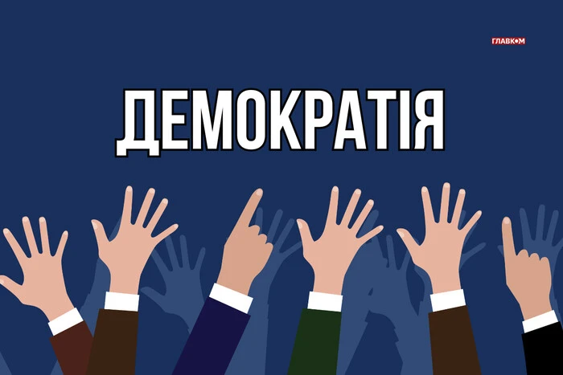
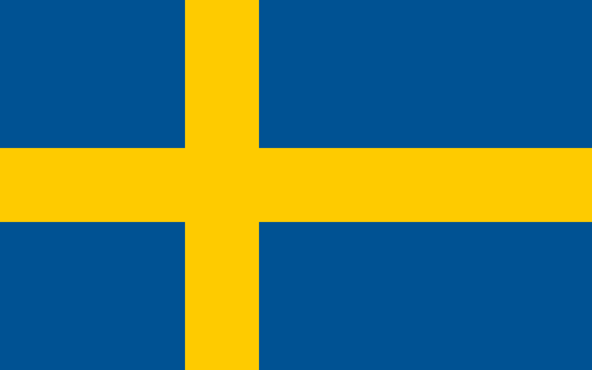
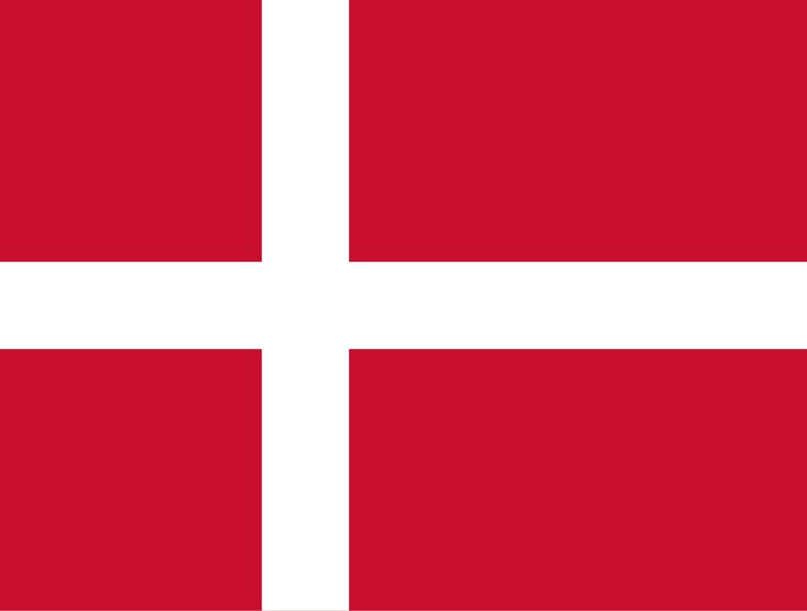
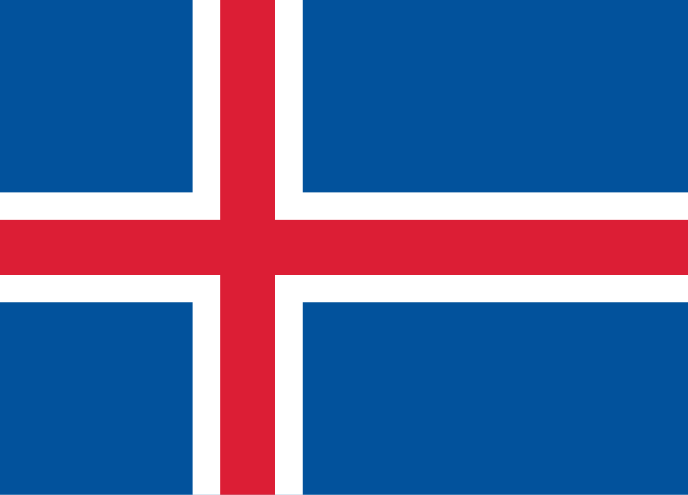
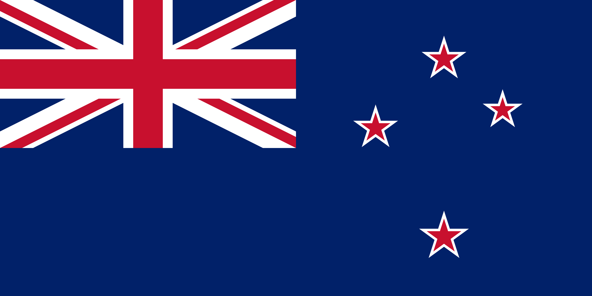
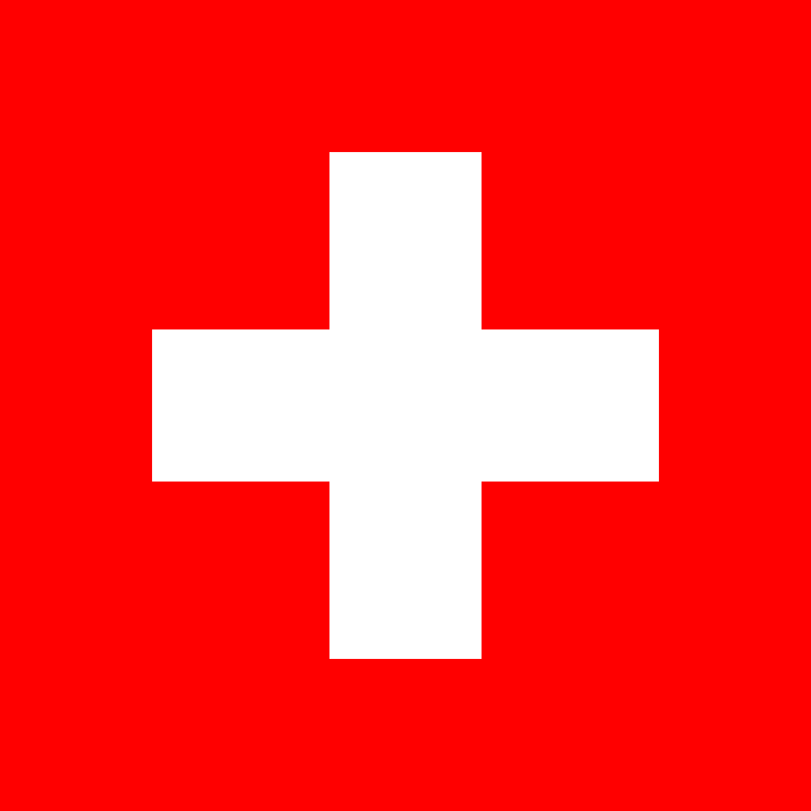

Канада — стабільна демократія з конституційною монархією та парламентською системою. Формальний глава — монарх, реальна влада — у прем’єр-міністра та уряду.
Демократія та глобалізація
ДЕМОКРАТІЯ - політичний режим, за якого єдиним легітимним джерелом влади в державі визнається її народ.

Глобалізація демократії — це процес, у якому демократичні цінності, принципи (права людини, вибори, верховенство права) та інститути поширюються за межі окремих держав і поступово стають спільними для різних країн, що призводить до уніфікації політичних систем у масштабах усього світу.
Міжнародні актори (організації, транснаціональні компанії) впливають на розвиток демократії та сприяють формуванню глобального громадянського суспільства.


Швеція — конституційна монархія з парламентською системою, яка відома стабільністю і високим рівнем участі громадян у політичному житті.

Данія — стабільна парламентська монархія, яка поєднує демократичні цінності з високим рівнем прозорості та соціальної відповідальності.

Ісландія — одна з найстаріших демократій світу, парламентська республіка з багатопартійною системою, Альтинг — найдавніший парламент у світі.

Нова Зеландія — стабільна демократія з конституційною монархією та парламентською системою, виконавча влада — уряд на чолі з прем'єр-міністром.

Швейцарія — федеративна парламентська республіка з високим рівнем демократії, прямим голосуванням громадян та сильною місцевою автономією.
Як глобалізація змінила світ. Кордони стали менш відчутними для капіталу, технологій та інформації. Люди отримали можливість легше подорожувати та спілкуватися, проте виникла залежність від світових криз.
Вплив міжнародних організацій. Такі структури, як ООН, СОТ або ЄС, диктують глобальні стандарти. Вони сприяють вирішенню конфліктів та можуть обмежувати суверенітет держав.
Основним чинником розвитку глобалізації стала науково-технічна революція, особливо Інтернет, який забезпечує миттєвий зв'язок між людьми по всьому світу.
Сделели Максим Максим Максим Настя